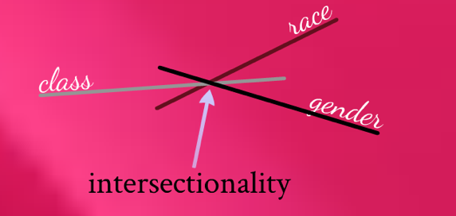

As of late, the terms ‘intersectionality’ and ‘intersectional feminism’ have been surfacing all over the world in feminist discussions. Since we believe the Wikipedia page does a horrible job in introducing a layman to intersectionality, and because the concept is extremely crucial to contemporary feminism and societal inclusivity, here’s our short explanation on these terms and why it is extremely important for India.
Intersectionality is basically the ways in which different forms of discrimination (racism and sexism, for example) are interconnected. The bedrock of intersectionality is this: discrimination can come from more than just one identity. An individual has multiple identities such as gender, caste, religion, and race, so it is possible for individuals to be discriminated for identifying with multiple identities. For instance, a Dalit woman may be denied her basic rights both because of her caste and gender.
Intersectionality is basically the ways in which different forms of discrimination (racism and sexism, for example) are interconnected.
Intersectionality was first discussed in the context of feminism by Prof. Kimberle Crenshaw, who had observed that black women had vastly different experiences from white women due to their race. She found that the cases brought by black women weren’t taken as seriously when compared to white women because it didn’t match the perceived norms of feminism (norms which mostly covered the problems faced by white women). For black woman, there was an intersection of both race and gender which was often overlooked, because conventional discourses on feminism at the time wasn’t inclusive of oppressed women who belonged to different races. The objective of intersectionality, therefore, is to heed this intersection, understand the problems associated with all social identities (not just gender), and include discourses with respect to it.
In India, most women are exposed to a system of patriarchy. However, it would be highly one-dimensional to regard that all women face the same form of discrimination and oppression. There are significant deviations in the extent and nature of discrimination faced by Dalit and lower caste women that might often escape conventional feminist discourses.
There are significant deviations in the extent and nature of discrimination faced by Dalit and lower caste women that might often escape conventional feminist discourses.
Let’s take the MeToo movement for example. While the movement provided a platform for women—who were mostly urban—to come out and make a strong stance against sexual violence, a majority of Dalit women living in rural areas were left out with their problems facing a lack of representation from the movement.
So if our goal here is to completely obliterate the system of patriarchy, our current feminist pursuit which focuses only on specific social identities would only get the job half done.
This is why intersectional feminism is important; it calls for acknowledgment of the variation in discrimination and scrutinizes the identities (race, caste, class, etc) that could be responsible for amplifying gender-based discrimination. It makes sure that all facets of discrimination are covered, and identities that further contribute to female oppression are addressed.